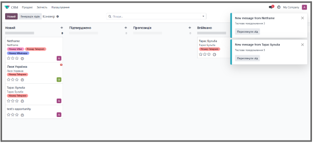
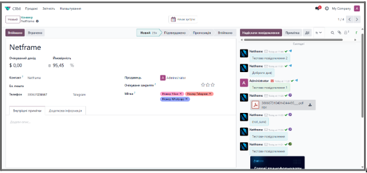
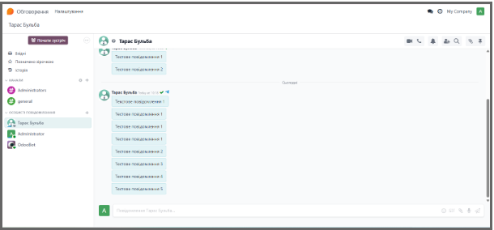
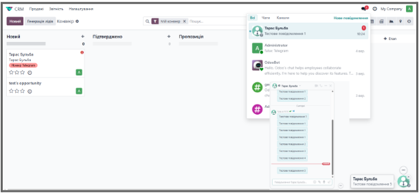
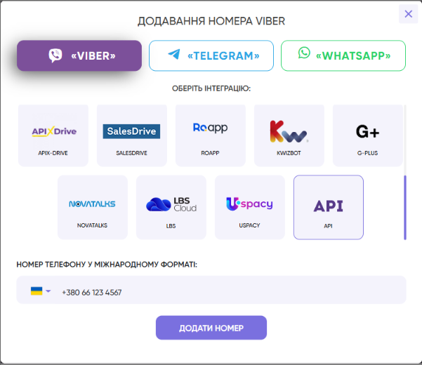
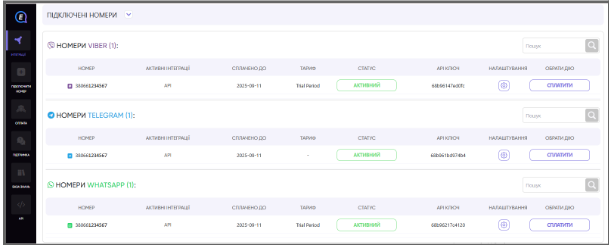
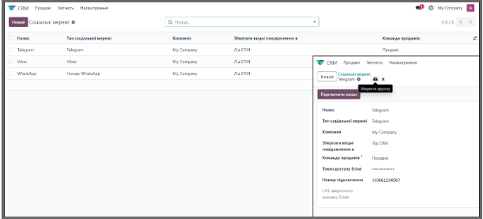
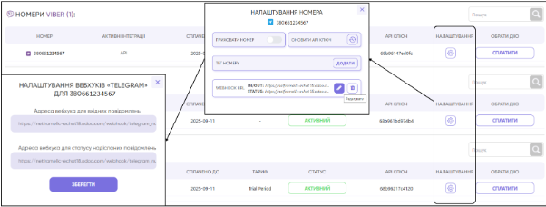

E-Chat Integration (Viber, Telegram, WhatsApp)
E-Chat is a platform for integrating Viber, Telegram, and WhatsApp into Odoo.
Features
- Automatic lead creation upon the first message
- Communication history saved in CRM or Discuss
- Support for incoming/outgoing messages, file attachments, and automatic assignment of conversations
- Display of name, photo, and channel tags for each contact.
The integration provides centralized management of all connected channels and quick setup via API tokens and webhooks.
Module Functionality
- Auto-create a lead upon a new inquiry
- Chat interface, file sharing, messenger switching, manager reassignment
- Red indicator for new messages and lead prioritization
- Channel tags displayed in the lead card


- All messages in a single channel
- New messages appear in the chatter, with a contact icon at the bottom.


Configuration
Connect a Number in E-Chat
- Register an account at e-chat.tech
- In your dashboard, add numbers for Viber, Telegram, and WhatsApp, selecting API integration for each messenger.

Check the connection status under the Integrations menu

Configuration in Odoo
- Log in as an administrator
- Ensure the E-Chat Integration module is installed.
- Go to CRM → Configuration → Social Media and create a connection for each messenger.
- Fill in the following fields:
- Name
- Social Media Type
- Company
- Store incoming messages in (CRM Lead or Discuss)
- Sales Team
- Echat Access Token
- Connect Number

Webhooks
- In the created connection, click Connect Channel.
- Copy the Echat Callback URL.
- In the E-Chat dashboard → Webhooks, paste the URL for both incoming and sent messages.

Testing
Send a message from a connected messenger and check its delivery in Odoo → CRM Lead or Discuss.
The module provides a centralized messenger integration with Odoo, automated lead creation, and efficient message distribution.
For implementation and support, please contact the Netframe team via odoo@netframe.org.
Support
Author: Netframe
Email: odoo@netframe.org